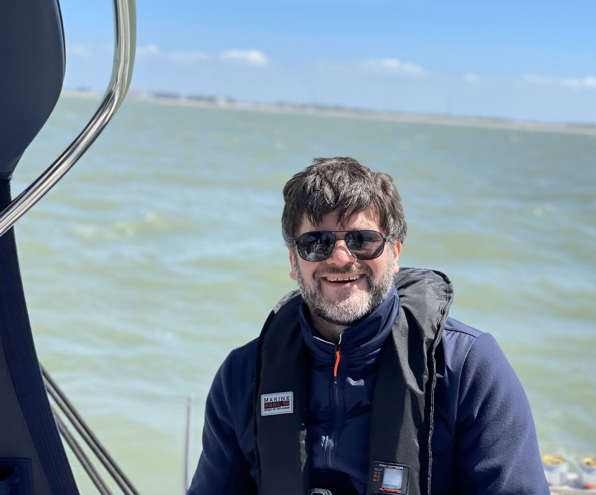

12 januari 2024
And the winner is...
Driewerf hoera! We hebben een eerste subscriber op de nieuwsbrief. Een uniek moment, zowel voor ons als voor de subscriber. Binnen een paar decennia, als we wereldberoemd zijn, wordt dit even legendarisch als de eerste Batman comic of het eerste optreden van de Stones bijgewoond hebben... hmmm.
Anyway, de trotse pionier en winnaar is: <<drumgeroffel>> (is bij deze jongen echt wel van toepassing)
Merci voor het beta-testen, Michael!!